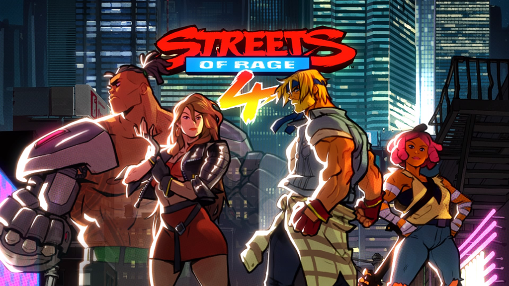
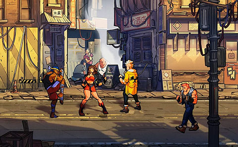
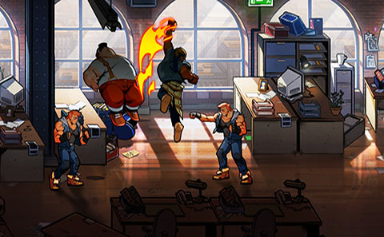
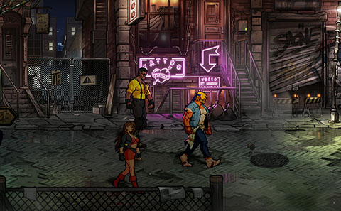

Streets of Rage 4, conhecido no Japão e na Ásia como Bare Knuckle IV, é um jogo
eletrônico do gênero beat 'em up desenvolvido pela Lizardcube e Guard Crush Games,
como o quarto título da série Streets of Rage, e publicado pela DotEmu em associação
com a Sega Games. É a sequência de Streets of Rage 3, do Mega Drive.

Jogabilidade
Continuando com o estilo da jogabilidade de lançamentos anteriores,
Streets of Rage 4 é um beat 'em-up de rolagem lateral no qual os
jogadores lutam contra ondas de inimigos usando uma série de ataques e
movimentos especiais.
A novidade da fórmula de jogo é a capacidade de
recuperar a saúde gasta usando um ataque especial, executando sucessivos
ataques de acompanhamento. Os jogadores também são capazes de manipular
os adversários uns contra os outros e paredes para combos estendidos.
É possível coletar estrelas, permitindo que os jogadores realizem super
movimentos poderosos.Os recursos desbloqueáveis incluem personagens de jogos
anteriores, apresentados em estilo de 16 bits, e faixas de música retrô de
Streets of Rage e Streets of Rage 2.



Historia
O jogo se passa 10 anos após os eventos de Streets of Rage 3, com os
personagens recorrentes Axel Stone, Blaze Fielding e Adam Hunter,
ao lado de dois novos personagens, a filha de Adam, Cherry, e um
aprendiz musculoso, melhorado ciberneticamente, do Dr. Gilbert Zan,
chamado Floyd Iraia